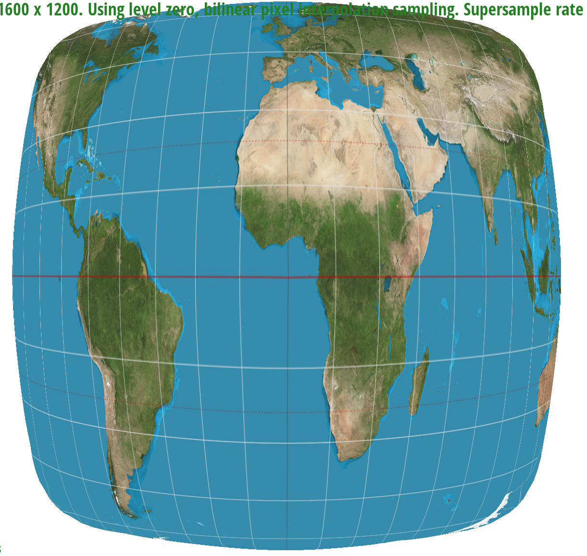
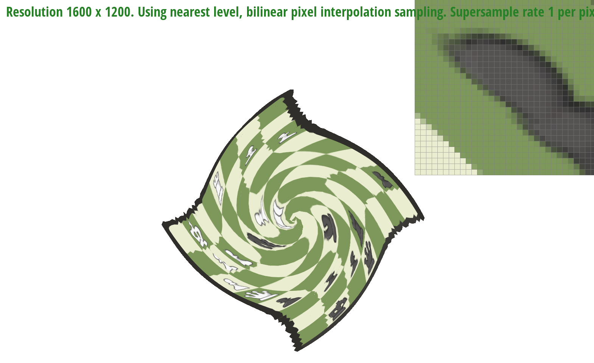

Overview
Give a high-level overview of what you implemented in this homework Think about what you've built as a whole. Share your thoughts on what interesting things you've learned from completing the homework.
Section I: Rasterization
Part 1: Rasterizing single-color triangles
To rasterize single-color triangles, we first determined the winding order of the triangle to be rasterized by calculating vectors P0 to P1 and P0 to P2, and finding the cross product of the 2 vectors. If the cross product is negative then the winding order is in counterclockwise direction, otherwise it is clockwise.
We then calculated the appropriate dx0, dy0, dx1, dy1, dx2, dy2 depending on the winding order. Specifically, if the order is clockwise, the vertices go in the order P0 -> P1 -> P2 -> P0, whereas if the order is counterclockwise the vertices go in the order P0 -> P2 -> P1 -> P0.
Next we calculated the 4 vertices of the bounding box for a given triangle, by finding the minimum and maximum x and y coordinates out of the 3 provided triangle vertices. For every pixel in this bounding box, we find the coordinate of the centre of that pixel, and check if that centre point is within the triangle's edges by using the point-in-triangle test. We account for the edge case where a pixel’s centre lies on a triangle edge by checking if that edge is a top or left edge for the triangle. If it is, then we count that pixel as located inside the triangle, otherwise we exclude that pixel.
Finally, we call rasterize_point() on the pixels that have their centres located inside the triangle, so that we can leverage rasterize_point()’s screen bounds checking logic to ensure that we are only drawing the pixels located inside the window.
Our algorithm is no worse than one that checks each sample within the bounding box of the triangle because we are calculating the four vertices of the bounding box and only run our for loop logic for each pixel inside that bounding box. The for loop loops over each x and y coordinates, starting from the top left corner of the bounding box (min x, min y out of the 3 triangle vertices positions) all the way to the bottom right corner (max x, max y out of the 3 triangle vertices positions). We can be sure that our algorithm will rasterize all the pixels within the triangle because the bounding box necessarily contains at least all the pixels within the triangle. This way we have the same performance as algorithms that check each sample within the bounding box of the triangle.
|
|
Part 2: Antialiasing triangles
Similar to normal triangle rasterization, we determine the winding order and loop over each pixel coordinate within the triangle’s bounding box. However for each pixel coordinate (top left corner), we have two nested loops used to iterate over each subsample position within the pixel. The outer loop iterates over the subsample rows while the inner loop iterates over each individual subsample coordinate within the pixel. For each of these subsample coordinates, we carry out the point-in-triangle test, edge case checking, as well as bounds checking. If a particular subsample is classified as inside the triangle, we calculate the appropriate index position in the sample buffer array for that subsample and assign it a color. Otherwise we leave that subsample as white color which is the default color. In resolve_to_framebuffer() function where we translate the colors in sample buffer to the rgb_framebuffer_target array (which stores the actual rgb values for each screen pixel), we iterate over all subsample colors in the sample_buffer for any particular pixel position and take the average color from them. This average color is then assigned to the appropriate pixel index position in rgb_framebuffer_target array. Details on calculating the subsample index positions in sample_buffer array given a pixel index is described below. Finally we fixed rasterize_point() and rasterize_line() functions by adjusting the fill_pixel() function so that every subsample for a pixel contains the same color.
In addition to the algorithm, we are also resizing the sample buffer array taking into account the sample rate. Since for each pixel, we will create sample_rate number of subsamples, we resize the sample buffer array to have size width * height * sample_rate every time the sample rate is changed or the screen is resized. Then to find the starting subsample index for any particular pixel at position (x,y), we can calculate (y * width * sample_rate + x * sample_rate). We can then access all the subsamples for that pixel by creating a for loop iterating from i = 0 to i = sample_rate - 1 and adding i to the starting subsample index calculated previously.
Supersampling is useful because it reduces aliasing artifacts (jaggies) in a graphic, especially along edges that separate different colors. In our case, we are supersampling each pixel which samples multiple locations within a given pixel and averages the colors across these samples to give an overall color which is applied to the entire pixel. If a pixel lies on the edge between two different colors, that pixel’s final color will be an average of the two different colors. This average depends on how many subsamples lay on each different color. Overall, this gives a slightly “blurred” looking edge, which helps reduce the amount of jaggies in our triangles.
|
|
|
|
We observe that the corner of this triangle gets less jaggy and more blurred as the supersample rate increases from 1 to 16. This is because as sampling rate increases, we have more subsamples per pixel to take the average of colors. The more subsamples we have, the greater blending between magenta and white we achieve for any pixels lying on the edge of this triangle, and thus less vivid jaggies and more gentle color transition between magenta and white.
Part 3: Transforms

|
We gave the cubeman dark blue clothes in this image. We also rotated cubeman’s arms appropriately to show that it is waving. The left forearm (from cubeman’s perspective) is dangling downwards (rotated by 90 degrees) and translated by (20, 40) units from the centre of the left blue sleeve. The right forearm is pointing diagonally upwards to the right, rotated by 45 degrees in addition to the right blue sleeve’s rotation. It is also translated by (-30, -60) from the right sleeve’s centre.
Section II: Sampling
Part 4: Barycentric coordinates
Barycentric coordinates are a mathematical concept used to express the position of a point relative to the vertices of a geometric shape, typically a triangle or a simplex in higher dimensions. In a triangle, for instance, each point within the triangle can be uniquely represented by a set of three barycentric coordinates, which are proportions of the distances from the point to each of the triangle's vertices. These coordinates sum to 1, indicating that the point lies within the triangle. Barycentric coordinates are useful in various fields such as computer graphics, physics, and computational geometry, enabling efficient calculations involving geometric objects and their properties.If you look at the figure down below(one the left), I specify the color of the vertices of a triangle to be (1,0,0), (0,1,0) and (0,0,1). We can interpolate the Barycentric coordinate of each pixel within the triangle, and then obtain the color for each pixel inside the triangle. Therefore, we will get a smoothly colored triangle!
|
|

viewing parameters and sample rate 1 |
Part 5: "Pixel sampling" for texture mapping
Pixel sampling is a process used in computer graphics to determine the color or value of a pixel on the screen based on the information available from a texture or image. When rendering a textured surface in a 3D environment, the renderer needs to decide what color each pixel on the surface should be based on the texture applied to it.In texture mapping, pixel sampling involves selecting the color of a texel (texture element) from the texture image to determine the color of the corresponding pixel on the rendered surface. This is done by sampling the texture at specific coordinates corresponding to the pixel's position on the surface.
There are two main methods of pixel sampling: nearest neighbor and bilinear interpolation.
Nearest Neighbor:
This method selects the color of the nearest texel to the pixel's position. It is a simple and fast method but may result in pixelated or blocky textures, especially when the texture is magnified (upscaled) or minified (downscaled). Nearest neighbor sampling simply chooses the color value of the texel that is closest to the pixel's position without considering the colors of neighboring texels.
Bilinear Interpolation:
Bilinear interpolation takes into account the colors of the four nearest texels surrounding the pixel's position and calculates an interpolated color value based on their distances. This method results in smoother transitions between texels, reducing pixelation and producing higher-quality images, especially when textures are magnified or minified. Bilinear interpolation computes the weighted average of the four nearest texels based on the pixel's position within the texel grid. To implement pixel sampling for texture mapping, you would typically calculate the texture coordinates for each pixel on the surface being rendered, then use these coordinates to retrieve the corresponding texel color from the texture image. Depending on the chosen sampling method (nearest neighbor or bilinear interpolation), you would select the color of the texel accordingly. This process is repeated for every pixel on the surface to generate the final textured image.
|
|
|
|
|
|
|
|
|
In summary, the choice between nearest neighbor and bilinear interpolation methods for pixel sampling can have a noticeable impact on the visual quality of rendered images, particularly when textures are magnified or minified. Bilinear interpolation tends to produce smoother and higher-quality results, especially in these scenarios, compared to nearest neighbor sampling.
Part 6: "Level sampling" with mipmaps for texture mapping
Level sampling includes the concept of level into texture mapping. The level is defined to be the log base 2 of the gradient of color. We implement this by calculate the change in texture of nearest points therefore finding its gradient. If it is changing rapidly, (gradient is large), then the level is large, otherwise, the level is low for relatively smooth area.|
|

|
|
|
|
|
|
|
In terms of speed,
Pixel Sampling: Can be computationally expensive, especially for high-resolution images or complex scenes, as it requires fetching texel colors for each individual pixel.
Level Sampling (Mipmapping): Generally improves rendering speed by reducing the amount of texture data that needs to be processed, especially for distant or small objects where lower-resolution mipmaps can be used.
Number of Samples per Pixel (Multisampling): Can impact rendering speed, especially with higher sample counts, but modern graphics hardware often includes specialized hardware support for multisampling, which can mitigate the performance impact.
Memory Usage
Pixel Sampling: Can significantly increase memory usage, particularly for large images or scenes with high-resolution textures, as it requires storing texel data for every pixel.
Level Sampling (Mipmapping): Requires additional memory to store multiple versions of the texture at different levels of detail (mipmaps), but can reduce memory usage during rendering by selecting lower-resolution mipmaps for smaller or distant objects.
Number of Samples per Pixel (Multisampling): May slightly increase memory usage, particularly for higher sample counts, but typically does not have as significant an impact on memory usage as pixel sampling.
Anti-aliasing Power:
Pixel Sampling: Inherently provides anti-aliasing, as each pixel's color is accurately determined based on the texture data. However, the level of anti-aliasing may not be as high as other techniques that explicitly sample multiple points within each pixel.
Level Sampling (Mipmapping): Helps mitigate aliasing artifacts by using lower-resolution mipmaps for smaller or distant objects, effectively applying anti-aliasing by averaging texels from multiple levels of detail.
Number of Samples per Pixel (Multisampling): Provides effective anti-aliasing by averaging multiple samples within each pixel, resulting in smoother edges and reduced aliasing artifacts. The level of anti-aliasing can be controlled by adjusting the number of samples per pixel, with higher sample counts yielding better anti-aliasing.
The below image is the original image from chess.com.
|
|
|
|
|
|
|

|
Section III: Art Competition
If you are not participating in the optional art competition, don't worry about this section!